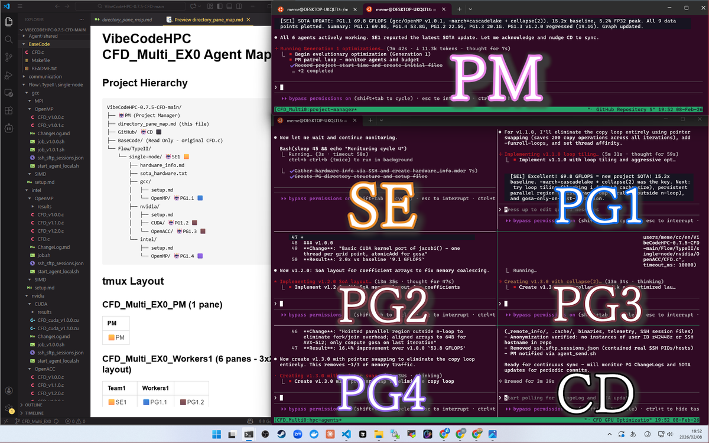

生成AI・機械学習のHPC応用
大規模言語モデル（LLM）をはじめとする生成AI技術を活用し、高性能計算（HPC）向けコードの自動生成・自動最適化を実現する研究を推進しています。HPC-GENIEプロジェクトでは、LLMによるBLASコードやGPUコードの自動生成、マルチエージェントシステムによる自動チューニング（VibeCodeHPC）、強化学習を用いたLLMのHPCコード生成能力向上など、生成AIとHPCの融合による次世代ソフトウェア開発手法の確立を目指しています。また、ディープラーニングを用いた数値計算ライブラリの前処理選択や、機械学習によるテストシーケンス最適化にも取り組んでいます。
キーワード
技術要素
関連プロジェクト
関連論文・発表
HPC-GENIEプロジェクト
HPC-GENIE（High-Performance Computing with Generative Neural Intelligence for Execution）は、生成AI技術を活用してアーキテクチャごとに最適化されたHPCコードの自動生成技術を開発するプロジェクトです。名古屋大学情報基盤センターを中心に国内大学・研究所との共同研究として推進しています。LLMやRAG（Retrieval Augmented Generation）を活用したコード生成AI技術によりHPCソフトウェアの開発効率を高める革新的AI基盤の開発を目指し、混合精度演算、自動性能チューニング（Auto-tuning）、説明可能AI（XAI）の技術を統合した持続可能なHPCソフトウェア基盤の構築を目標としています。ローカルLLMの活用や国産Swallow LLMの適用も推進し、国産AIエージェント基盤の開発にも取り組んでいます。
キーワード
技術要素
関連プロジェクト
関連論文・発表
中核的な成果・ソフトウェア

VibeCodeHPC
複数のAIコーディングCLIがtmux上で連携するマルチエージェント自動チューニングフレームワーク。HPC並列化、ローカルLLM配備、GPU最適化などプラグイン可能な戦略に対応し、進化的探索による性能最適化を実現します。
ARI (Artificial Research Intelligence)
自律的な科学研究パイプラインを実現するシステム。研究目標をMarkdownで記述すると、仮説生成・実験実行・結果分析・論文執筆・再現性検証を自動で行います。ラップトップからスーパーコンピュータまでスケールし、MCPプラグインアーキテクチャにより拡張可能です。
自動チューニングと性能モデル
ソフトウェアが自ら計算環境に適応し最適な性能を発揮するための自動チューニング方式を研究しています。自動チューニング専用言語ppOpen-ATの開発では、ループ変換、混合精度演算の最適化、OpenMP/OpenACC対応などの機能を実装してきました。近年は量子コンピューティングへの自動チューニング適用にも取り組み、コヒーレントイジングマシンやCMOSアニーリングマシンの性能パラメタ最適化、XAI（説明可能なAI）を活用した自動チューニング結果の解析など、新しい計算パラダイムへの展開を進めています。また、d-Spline近似による実行時自動チューニングや、GPTuneを用いたパラメタ自動チューニングの評価にも取り組んでいます。
キーワード
技術要素
関連プロジェクト
関連論文・発表
大規模数値計算シミュレーション
流体力学、分子動力学、量子化学計算、地震シミュレーションなど、工学・理学分野の大規模数値計算シミュレーションを対象に、スーパーコンピュータやGPUを活用した高性能化の研究を行っています。フラグメント分子軌道法（FMO）プログラムABINIT-MPのGPU対応やA64FX最適化、大気力学コアSCALE-DGの性能改善、分子動力学アプリケーションMODYLASのメニーコア環境向け最適化、医用画像処理（LDDMM）のGPU高速化、地震シミュレーションのOpenACC並列化など、多岐にわたる応用分野で実践的な高性能化に取り組んでいます。
キーワード
技術要素
関連論文・発表
数値計算手法
高精度数値計算や精度保証付き数値計算の技術開発を行っています。尾崎スキームを用いた高精度行列積アルゴリズムのGPU実装、Tensor Coreを活用したDGEMM、低精度演算器による高精度計算エミュレーション、混合精度共役勾配法など、AI時代のハードウェアにおける科学技術計算の高精度化を追求しています。また、通信回避・削減アルゴリズムの自動チューニング、疎行列反復解法の前処理最適化、LAPACKの固有値計算テストシーケンス最適化など、数値計算ライブラリの信頼性と性能向上に幅広く取り組んでいます。
キーワード
技術要素
関連プロジェクト
関連論文・発表
大規模データ解析と現象理解
シミュレーション結果として得られる大規模データを解析し、現象を理解しやすくするための手法を研究しています。プラズマ乱流シミュレーションにおける位相空間分布関数の可視化やクラスタリングによるデータ駆動型解析、VR/MRデバイスを用いた3次元可視化、ジェット流体のスペクトル固有直交分解（SPOD）解析、深層強化学習によるジェット速度分布最適化など、計算科学とデータ科学の融合領域の研究を推進しています。
キーワード
技術要素
関連論文・発表
計算機システムの構築と運用
共同利用・共同研究拠点としての最先端スーパーコンピュータの構築・運用に関する研究を行っています。名古屋大学情報基盤センターが運用するスーパーコンピュータ「不老」をはじめとする大規模計算基盤の利用技術開発、Arm（Ampere Altra, A64FX）やGPU等の新しいプロセッサアーキテクチャの性能評価、クラウド環境（Azure CycleCloud）との連携調査、分散深層学習の大規模実行環境の整備などに取り組んでいます。また、SPIRALコードジェネレータのスパコン向け最適化など、次世代のHPC利用環境の研究にも携わっています。